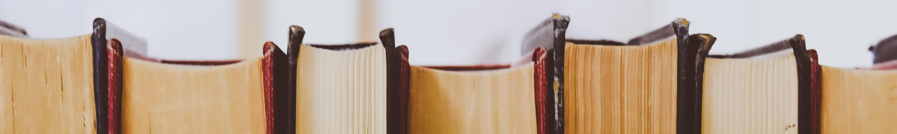

WILLKOMMEN IN DER BIBLIOTHEK KLAUS-WEILER-FRAXERN!
Unsere Bibliothek ist mit einem Medienbestand von 14779 Büchern, 1472 Filmen, 789 Hörbüchern und 59 Zeitschriften
ein Ort für Jung und Alt.
Da die Bibliothek ein wesentlicher Teil der VMS Klaus-Weiler-Fraxern ist, richtet sich der Großteil unserer Sammelschwepunkte
nach Interessen
der SchülerInnen - von langweiligen Sachbüchern, über fesselnde Fantasy-Bücher bis hin zu spannenden Filmen - gibt es alles zu finden!
Öffnungszeiten:
Mo-Fr: 17:00 - 19:30
So: 09:00-11:30
An Feiertagen geschlossen!
08.12.2022: Maria Empfängnis
25.12.2022: Weihnachten
26.12.2022: Stefanitag
01.01.2023: Neujahr
06.01.2023: Heilige Drei Könige
Gebühren und Ausleihdauer:
Gebühren:
SchülerInnen bekommen eine kostenlose Bib-Card, die bis zum 15. Lebensjahr kostenlos bleibt.
Allerdings muss bei Verlust eine Bearbeitungsgebühr von 10€ bezahlt werden.
Erwachsene müssen jährlich 10€ für die Bib-Card zahlen.
Es können ausschließlich Bib-Mitglieder unsere Medien ausleihen!
Bei verspäteter Rückgabe werden 0,50€ pro Tag und pro Medium verrechnet.
Ausleihdauer:
Die Ausleihdauer für Bücher beträgt 4 Wochen. Verlängerung möglich.
Die Ausleihdauer für CDs, DVDs und Zeitschrifte beträgt 2 Wochen.
Kontakt:
Treietstraße 17b | Mittelschule Klaus-Weiler-Fraxern
6833 Klaus
Austria
Tel: +43(0) 5524 12345
Mail: klaus@bibliothek.at
Anreise:
Sofern Sie mit dem Zug nach Klaus reisen, wird empfohlen am
Bahnhof in Klaus auszusteigen und anschließen entweder zu Fuß oder mit dem Bus weiter zu fahren.
Gehzeit über die Treietstraße beträgt ca. 18 Minuten.
Sollten Sie mit dem Bus weiterfahren, müssen Sie den 59er Richtung Feldkirch nehmen und Klaus Postamt aussteigen. Von dort aus
müssen Sie über die Treietstraße Richtung Westen laufen. Fahrt dauert 7 Miunten und die Gehzeit ca. 6 Minuten.
 Suche
Suche